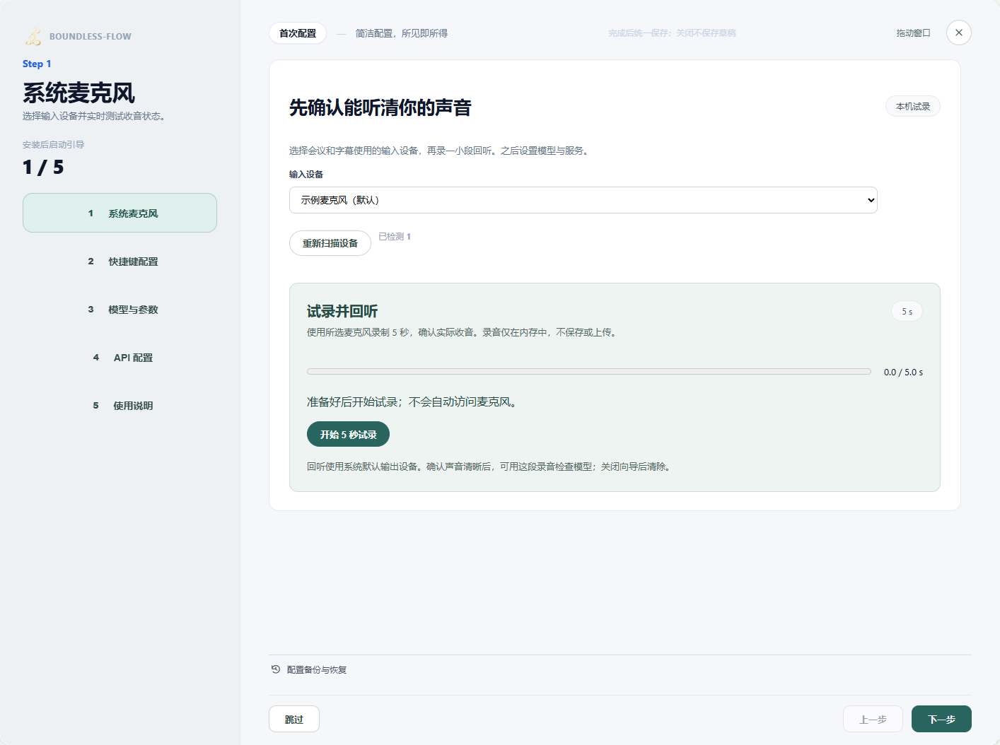
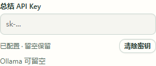
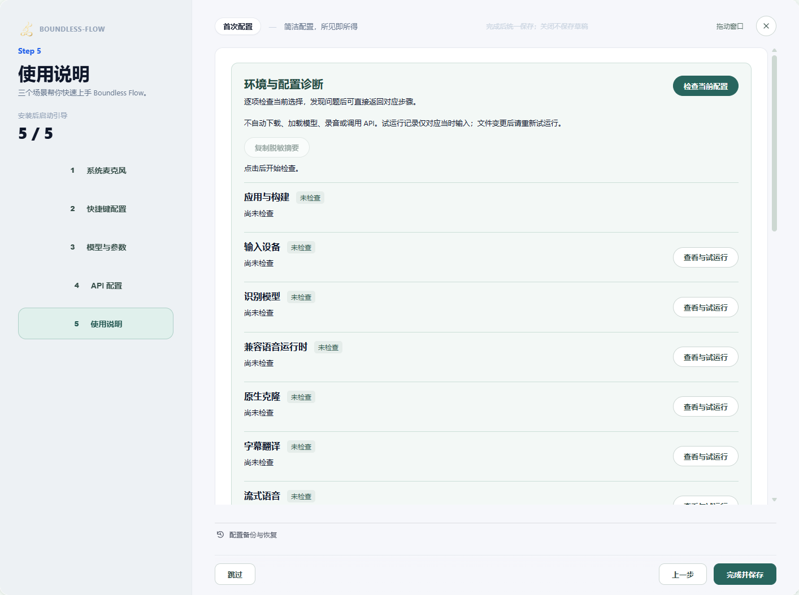

场景教程
第一次使用：安装与配置
先让软件听见你的声音，再添加翻译、纪要或克隆。
你能得到什么
完成一次短录音，看到原文，并保存以后可复用的配置。
开始前准备
- Windows 桌面电脑、可用麦克风和耳机；此版本的手机应用尚未提供。
- 保留应用和配套组件的完整目录。正式安装包与签名发布尚未完成；当前请使用提供给你的完整测试版本，不要只复制一个 exe，也不要运行开发脚本。
- 只做本地转录需要匹配的识别模型；使用云端翻译或纪要时，另需服务地址、可用模型和 API Key。
逐步操作
- 01
打开完整应用
运行收到的 Windows 安装包，选择安装目录并按提示完成安装。随后从桌面或开始菜单打开 Boundless Flow，确认主界面显示 0.5.0。安装包不含模型权重；按需在配置引导页选择自己下载的模型，或配置 API。若提示缺少 Microsoft Edge WebView2 Runtime，请先安装该运行组件再重试。若已运行，回到现有窗口，不要反复打开多个实例。此时暂不启用同传。 新版提供「场景教程」入口，按任务选择说明；打开教程不会修改配置。
真实软件界面 · 点击放大；图中示例数据不代表你的结果 - 1按任务打开教程，不会修改配置。
- 02
点击「配置引导页」，试录麦克风
选择「输入设备」，点击「开始 5 秒试录」，正常说一句话。录完点击「准备回听」，再按播放器播放并确认声音清楚。然后点击「用这段录音检查模型」。听不到时，先检查 Windows 麦克风权限、设备和输入音量；能听见会议对方，不代表这个输入能录到对方。

真实软件界面 · 点击放大；图中示例数据不代表你的结果 - 1选择实际使用的输入设备。
- 2录制短音频并试听，确认声音来自正确设备。
- 03
设置快捷键并选择识别模型
在快捷键步骤查看或设置快捷键，再进入「模型与参数」选择识别方式及所需模型目录或文件。完成文件检查后，展开「试转录一段录音」。若尚未选中刚才的录音，点击「使用刚才的 5 秒试录」，再点「开始试转录」。核对输出是否对应讲话；没有文字不算验证通过。更换模型、语言或录音后重新测试。首次只配置转录即可。

真实软件界面 · 点击放大；图中示例数据不代表你的结果 - 1先选择模型与参数。
- 2点击进入音色模型的配置与试音。
- 04
需要翻译时，再配置服务
在 API 配置中搜索所需服务，填写它的实际地址、模型及鉴权并启用。选择用于翻译的服务，输入一句测试原文、选择目标语言，点击「开始翻译」。保存配置成功不代表接口可用。暂时不需要翻译，可以先跳过。
API Key 显示「已配置」时，密码框留空会保留原密钥。需要更换时输入新密钥并保存；需要移除时点击「清除密钥」。若提示保存失败，输入内容仍在，请检查提示后重试。会议纪要可选择共用设置或独立设置，两者分别保留。

密钥保存成功后，密码框保持空白。点击「清除密钥」才会移除。 
真实软件界面 · 点击放大；图中示例数据不代表你的结果 - 1选择已配置的翻译服务。
- 2先填写一小段测试原文。
- 3选择目标语言。
- 4配置有效后点击开始翻译。
- 05
完成并保存，然后试一次转录
在引导最后一步点击完成保存；直接关闭会放弃本次未保存修改。回到「实时字幕」，点击「开始」，说一句完整的话，再点击「停止」。先确认原文，再增加其他功能。

真实软件界面 · 点击放大；图中示例数据不代表你的结果 - 1完成引导才会保存配置；点击关闭会放弃未保存修改。


怎么知道成功
回听能听见自己的短录音；停止后能看到对应原文；再次打开配置，保存内容仍在。
遇到问题
应用打不开／缺组件
关闭正在运行的 Boundless Flow 后重新运行安装包修复组件；不要把模型目录或开发命令当成应用安装。卸载不会清除用户配置、录音和外部模型。
没有文字
先回听麦克风短录音，再检查识别模型；把输入问题与模型问题分开定位。
修改没有保存
重新打开引导，修改后走到最后一步完成保存。关闭按钮不会保存本次草稿。